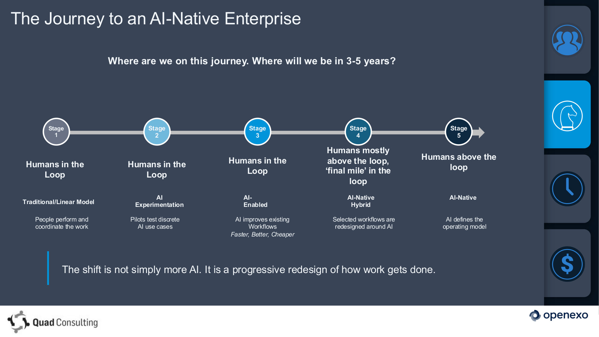

This discussion should not project today’s structures, capabilities, or constraints into the future. It should begin with a compelling 5–7 year vision of what an AI-native DFRNT + Urgent could become, then backcast the operating, product, and capability path required to get there.
We are not just theorising from the sidelines. We have a real courier business generating live complexity and a software platform that can encode, automate, and scale the learning. No other courier company is better positioned than we are to do this.
Future-state lens
The most useful question is not how to improve the current business incrementally. It is: if we designed DFRNT and Urgent from scratch today to be AI-native 5–7 years from now, what would exist, what would be automated, what would humans still own, and what would make the business structurally better than a traditional courier operator?
- The future state should feel materially different from a courier company with AI tools bolted on.
- Urgent should act as the proving ground and flagship operator for that model.
- DFRNT should become the operating system that captures, scales, and productises those learnings.
Reference frame

Current proof and strategic upside
Lower cost to serve
Backcasting from an AI-native future creates the possibility of materially lower customer cost, rather than simply better tooling for the same manual process.
20 staff → 5
If the operating model is redesigned around automation and exception handling, a dispatch/ops structure currently needing roughly 20 people could trend toward 5 over time — but only if we design for that future deliberately rather than inherit today’s structures by default.
Valuation + US entry
That makes a 5x EBITDA sale story more attractive and opens a different US path: not defending a tiny installed base, but using the model as proof for technology-led acquisition and improvement of transport businesses, potentially with PE backing.
Strategic options
Three credible paths exist, but they do not create the same economics or the same future.
Stay AI-enabled
Continue modernising the current stack and add selective AI features such as summaries, copilots, extraction and exception tooling.
- Lowest near-term disruption
- Protects current revenue base
- Highest risk of becoming a cleaner version of the old model
Dual-track: defend + wedge
Usually the balanced answer, but weak if "defending the base" becomes an excuse to underfund the real pivot.
- Only attractive if there were a meaningful base to protect
- High risk of legacy work absorbing all oxygen
- Can become a polite way of delaying the pivot
Full AI-native pivot
Make the pivot the primary build priority and use Urgent as the proof case for operating-model transformation.
- Best fit for DFRNT’s actual market position
- Strongest escape from low-margin delivery economics
- Creates the clearest testimony engine for future growth
Risks
Customer demand can pull the roadmap backward
Prospects may keep asking DFRNT to preserve manual process steps that an AI-native strategy is supposed to eliminate. If DFRNT keeps saying yes, the product stays trapped inside the economics of traditional dispatch.
AI features can look bigger than they are
Summaries, copilots and search may help, but they do not by themselves create a structurally better business. DFRNT needs proof of operating-model change, not just feature novelty.
Legacy work can consume all oxygen
Four developers modernising a legacy platform can easily absorb all available capacity unless the AI-native wedge has explicit milestones and a protected owner.
The economics are compelling but not yet proven
The upside should not be treated as real until DFRNT can show measurable reductions in human touches, staffing intensity, customer cost and cost-to-serve.
If DFRNT does not do this, someone else may
The danger is not only missing upside. It is ending up with neither business: not the AI-native winner, and not a particularly attractive legacy delivery model either.
The four operating stages
If the pivot is real, we need to map the courier company stage by stage — the functions under each stage, the apps involved, and where AI should assist, automate, or fully replace manual coordination.
Sales
Lead capture, pricing, service design, onboarding, and clean handoff into live operations.
- CRM / CSP
- Configurator
- Master Controller
Operations
Booking intake, dispatch, route/run planning, recurring work, exceptions, and service control.
- DespatchWeb
- Routed Operations
- Auto Dispatch
Accounts
Invoicing, settlements, sync, AR, reconciliation, and margin truth.
- Accounts
- Reporting
- Finance integrations
Delivery
Courier execution, scans, POD, recipient visibility, and recoverable field exceptions.
- Courier Portal
- Drive surfaces
- Integration Manager
The strategy is not to extrapolate today forward. It is to define a compelling AI-native future state for DFRNT and Urgent, then backcast the operating model, product roadmap, and capability build required to make it real.
Recommendation
The strongest direction is a more decisive AI-native pivot, framed by a compelling 5–7 year target state. DFRNT should use Urgent as the proof case, focus the majority of development effort on the transformation, and stop letting each new tenant request pull the product back toward a faster-horse version of the old manual model.
This gives DFRNT the best chance of creating undeniable proof that AI-native transport operations materially outperform the traditional delivery model — and it plays directly to the unique advantage of owning both the operating business and the platform.
- Describe the 5–7 year AI-native vision in concrete operating terms.
- Backcast the milestones, platform decisions, and capability sequence needed to reach it.
- Define the Urgent proof case in hard operating metrics.
- Re-rank the product roadmap against the pivot objective.
- Challenge incoming tenant requests against whether they move DFRNT toward the target operating model.